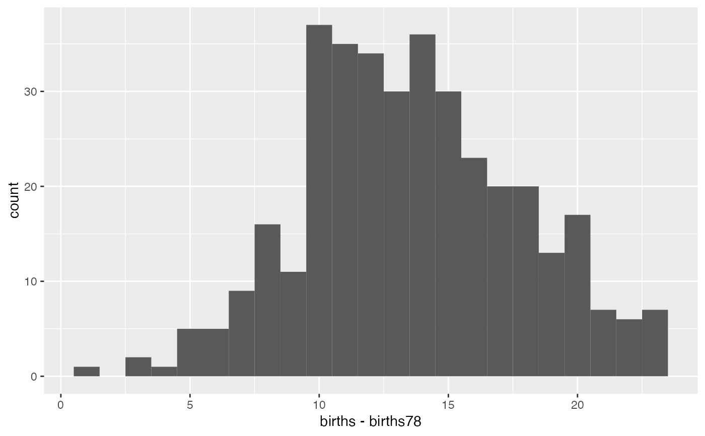

Number of births each day from 1968 to 1988
data(Births)
A data.frame with 7305 observations on the following 8 variables.
date Date
births Number of births on date (integer)
wday Day of week (ordered factor)
year Year (integer)
month Month (integer)
day_of_year Day of year (integer)
day_of_month Day of month (integer)
day_of_week Day of week (integer)
Data source: National Vital Statistics System natality data, as provided by Google BigQuery and exported to csv Robert Kern (http://www.mechanicalkern.com/static/birthdates-1968-1988.csv)
The number of births in Births78 is slightly lower than the number
of births in this data set for the year 1978. See the examples.
Births2015, Births.
data(Births) if(require(ggplot2)) { ggplot(data = Births, aes(x = date, y = births, colour = ~ wday)) + stat_smooth(se = FALSE, alpha = 0.8, geom = "line") ggplot(data = Births, aes(x = day_of_year, y = births, colour = ~ wday)) + geom_point(size = 0.4, alpha = 0.5) + stat_smooth(se = FALSE, geom = "line", alpha = 0.6, size = 1.5) if (require(dplyr)) { ggplot( data = bind_cols(Births %>% filter(year == 1978), Births78 %>% rename(births78 = births)), aes(x = births - births78) ) + geom_histogram(binwidth = 1) } }#> #> #> #> #> #> #>